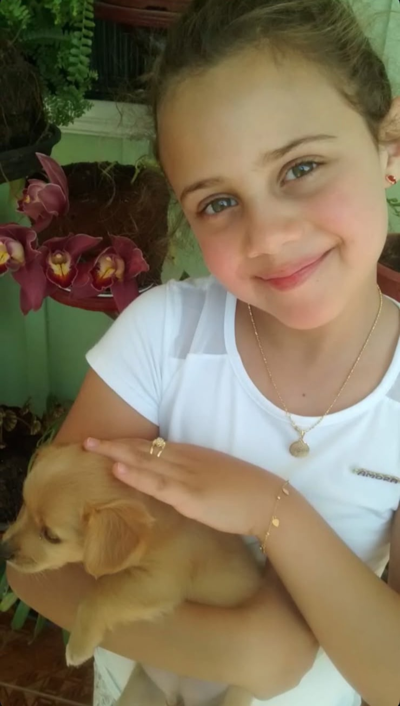
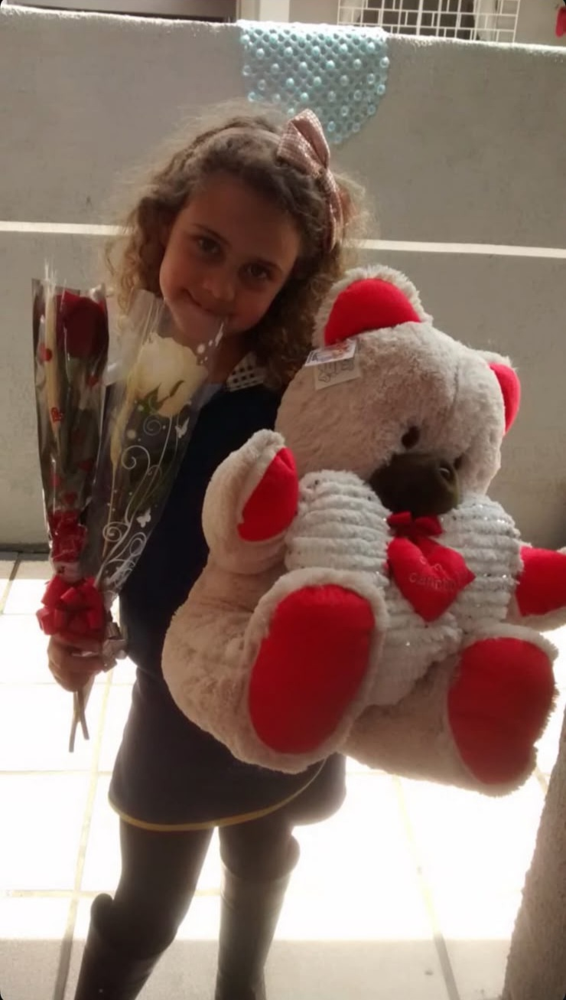
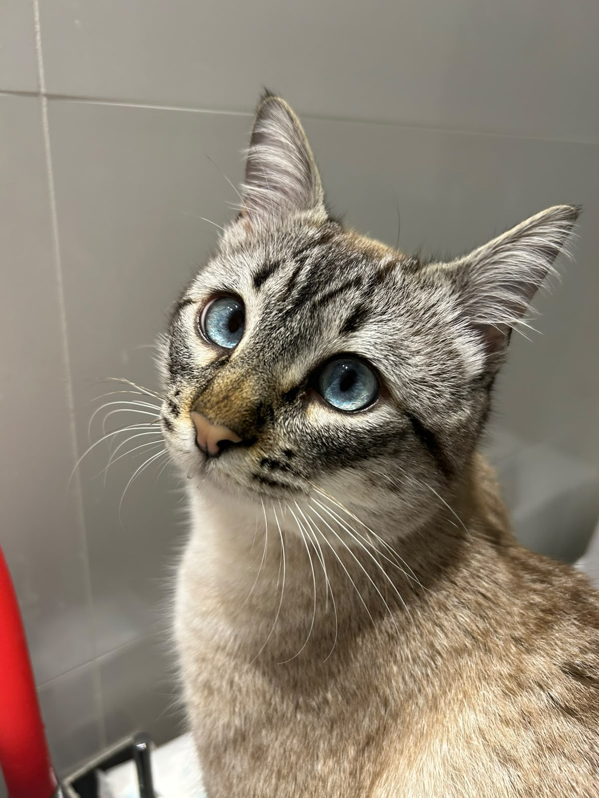
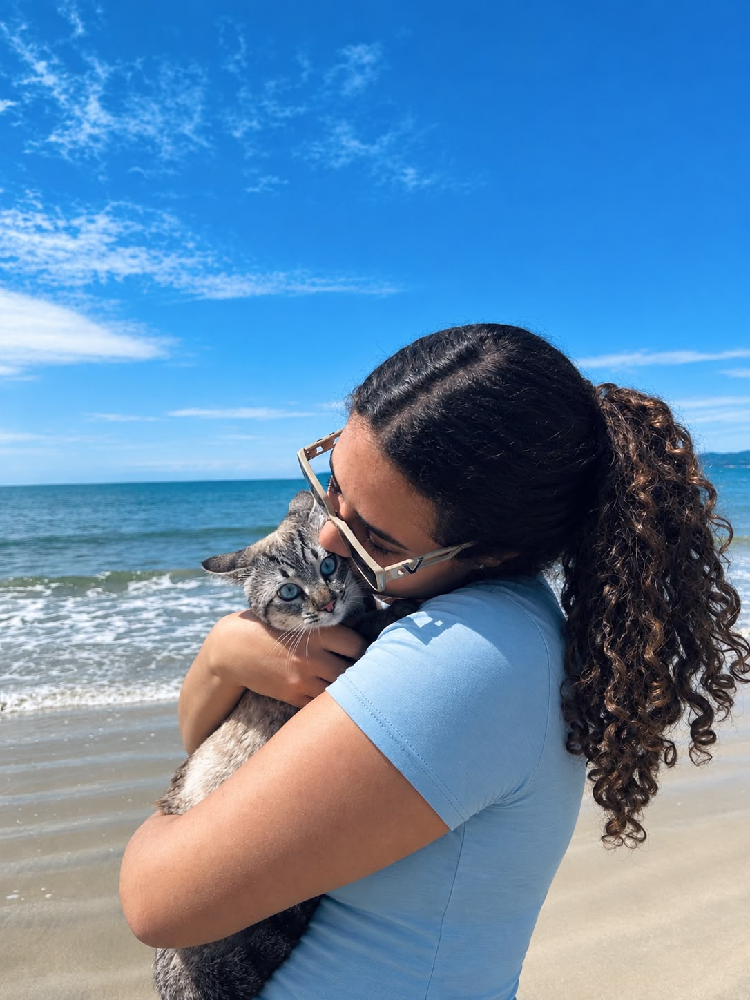

Momento especial
Meu diário de memórias
Pequenos momentos, grandes lembranças e uma história inteira para contar.
Oi, eu sou a Giula Rolim. Este espaço guarda um pedacinho da minha história: as escolas por onde passei, as amizades, as redações e o meu gatinho, que chegou em fevereiro de 2025 e virou meu melhor amigo.
Clique, explore e descubra o que cada página esconde.
Quatro momentos. Clique para abrir a lembrança.

Momento especial

Momentos inesquecíveis

Meu melhor amigo

Me ajudou em momentos difíceis gerados pela escola
Três instituições, muitos capítulos. Clique em cada uma.
Do pré ao 4º ano
Abrir memórias →5º e 6º ano
Abrir memórias →Do 7º ao 3º ano do Ensino Médio
Abrir memórias →Cada redação representa um momento de aprendizado e reflexão.
Última página
O Ensino Médio está chegando ao fim. Passei pelo Colégio Adventista do Alto Boqueirão, pelo Sagrado Coração da Nicola Pellanda e, por mais tempo, pelo Morelli. Em cada lugar levei um pouco de mim e trouxe um pouco de cada um.
As amizades, os professores, as noites de estudo, as redações e até os dias difíceis fazem parte de quem eu me tornei. Em 11 de fevereiro de 2025 adotei meu gatinho. Desde então ele virou meu melhor amigo. A gente brinca junto, ele me acompanha nos momentos de cansaço e enche a casa de leveza.
Levo gratidão por cada capítulo. Ainda existem muitas páginas esperando para serem escritas.
“Na vida, cada experiência deixa uma marca. Algumas se transformam em lembranças, outras em aprendizados e muitas se tornam parte de quem somos. O Ensino Médio foi apenas um capítulo da minha história, e ainda existem muitas páginas esperando para serem escritas.”
Giula Rolim